산불피해목 수피 그을음 지수(BSI) 현장 조사와 고사 판정을 위한 모바일 앱
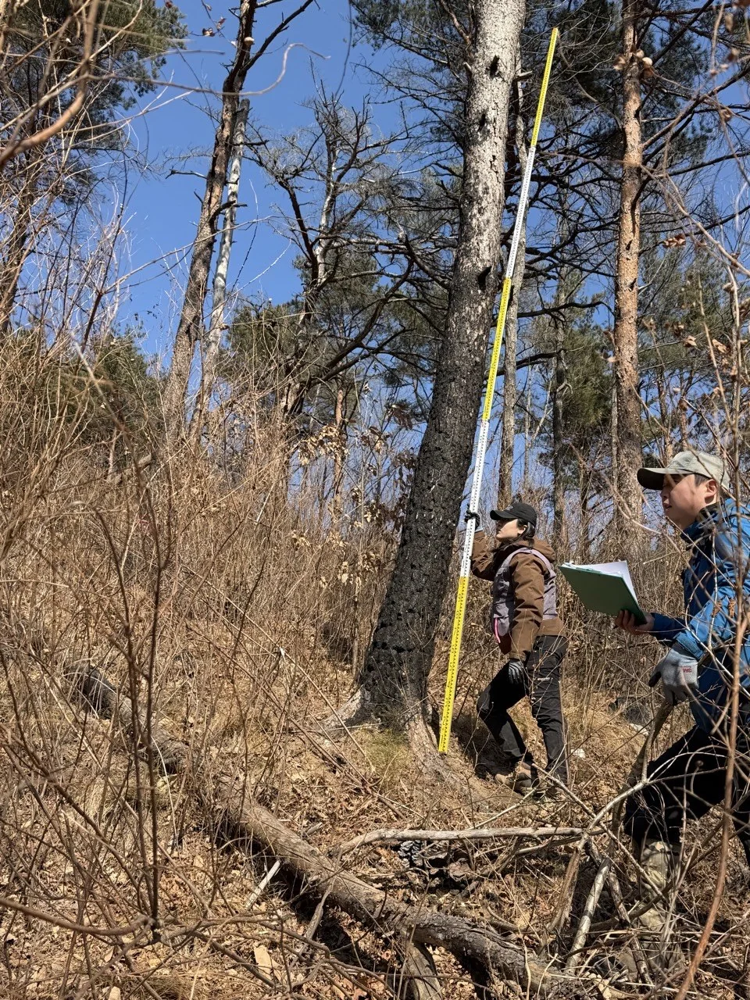
Android
iPhone
처음 실행하면 위치와 카메라 권한을 요청합니다. 위치는 정확한 위치로 허용합니다. iPhone에서는 앱을 사용하는 동안을 선택하고 정확한 위치를 켭니다.
앱을 실행하면 지도 화면이 표시됩니다. 조사지 선택, 조사목 추가, 기록 조회를 모두 이 화면에서 시작합니다.
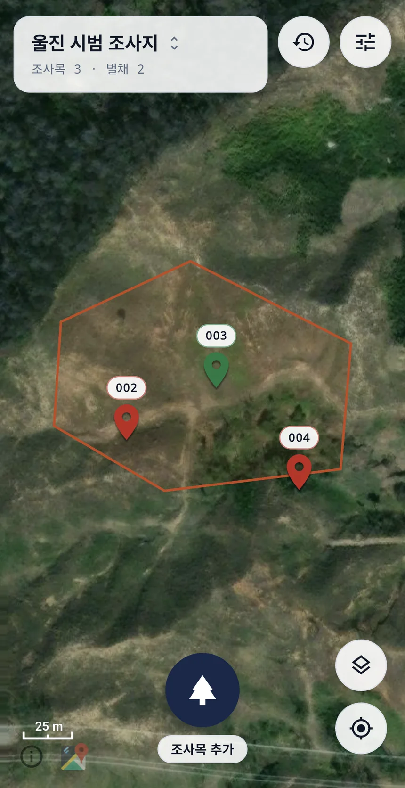
1 2 3 4 5 6 7 8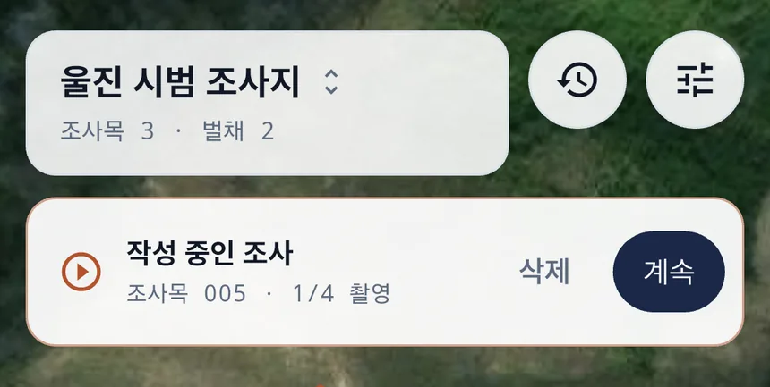
촬영한 사진은 즉시 저장됩니다. 앱이 종료되거나 전화를 받은 뒤에도 지도 위쪽에 작성 중인 조사가 표시되며, 계속을 누르면 이어서 촬영합니다. 삭제를 누르면 해당 조사를 삭제합니다.
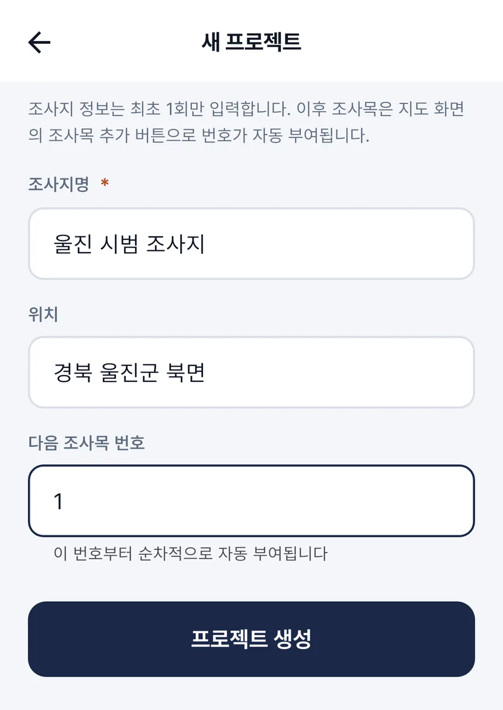
조사목 번호는 001부터 순서대로 자동 부여되며, 촬영 화면 위쪽에서 변경할 수 있습니다.
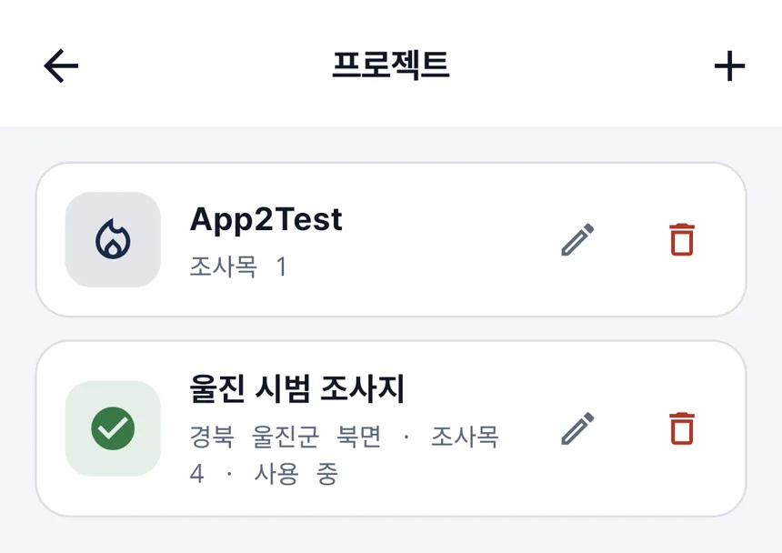
지도에는 선택한 조사지의 조사목만 표시됩니다. 프로젝트를 삭제해도 조사목 기록은 지워지지 않습니다.
지도 화면의 조사목 추가를 누르면 촬영 화면이 열립니다.
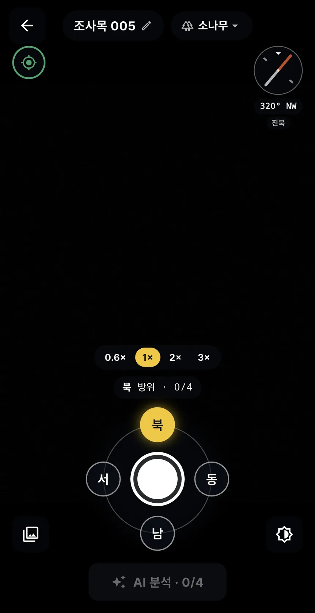
1 2 3 4 5 6 7 8 9 10지형 여건상 일부 방위를 촬영하지 못한 경우 촬영한 방위만으로 분석하고, 나머지는 결과 화면에서 야장 값을 입력합니다(6장). 촬영 중 앱이 종료되어도 촬영한 사진은 보존됩니다(2장).
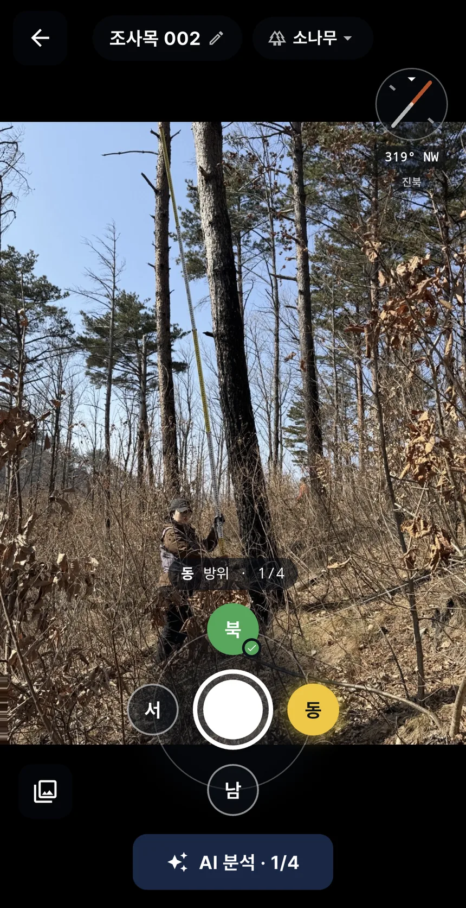
적백 폴(0.2 m 간격)은 자동으로 인식합니다. 노랑·흰 수고봉의 눈금 간격이 1 m가 아니면 설정 › 수고봉 눈금 간격을 실제 값으로 변경합니다.
AI 분석을 누르면 방위별로 수간, 그을음, 수고봉 눈금을 검출합니다. 분석은 휴대폰 안에서 처리되며 4방위에 약 20초가 걸립니다(기기에 따라 다름).
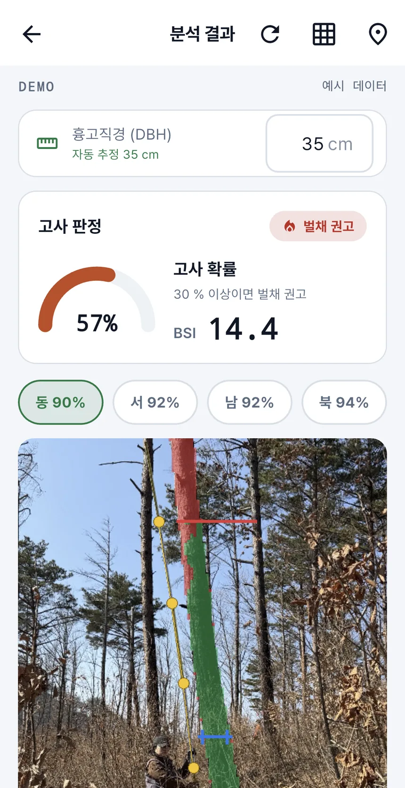
1 2 3 4 5 6 7 8화면 맨 아래 저장을 눌러야 기록됩니다.
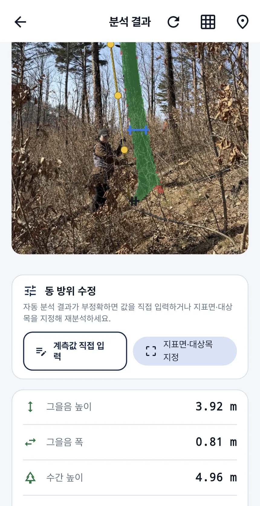
위쪽 방위 선택에서 방위를 누르고 화면을 아래로 내리면, 분석 사진 아래에 해당 방위의 계측값이 표시됩니다.
BSI와 흉고직경으로 판정표(BSI 1~25, 흉고직경 20~58 cm)에서 고사 확률을 산출합니다. 흉고직경이 없으면 판정하지 않습니다.
자동 분석 결과가 부정확한 방위는 결과 화면의 방위 선택에서 해당 방위를 누른 뒤, 분석 사진 아래의 방위 수정에서 보정합니다. 저장한 뒤에는 조사목 상세 화면 오른쪽 위의 새로고침(이미지 재분석)으로 다시 분석할 수 있습니다.
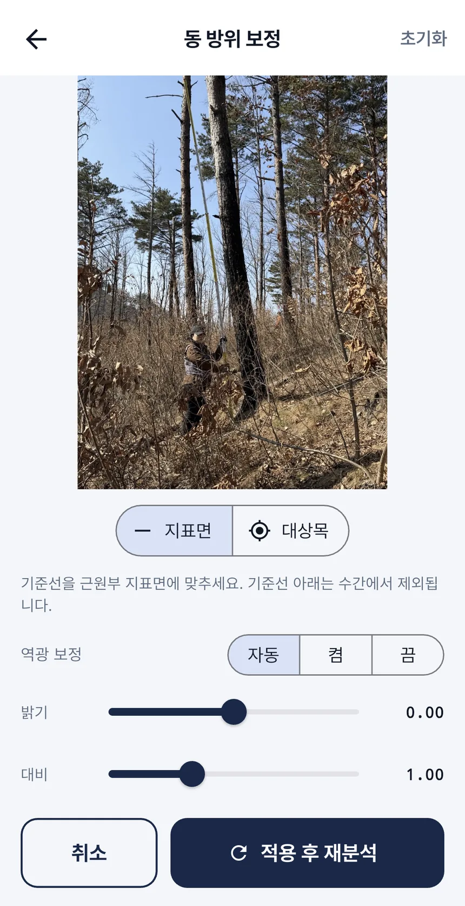
방위 수정의 지표면·대상목 지정을 누르면 보정 화면이 열립니다.
설정을 마치면 적용 후 재분석을 누릅니다.
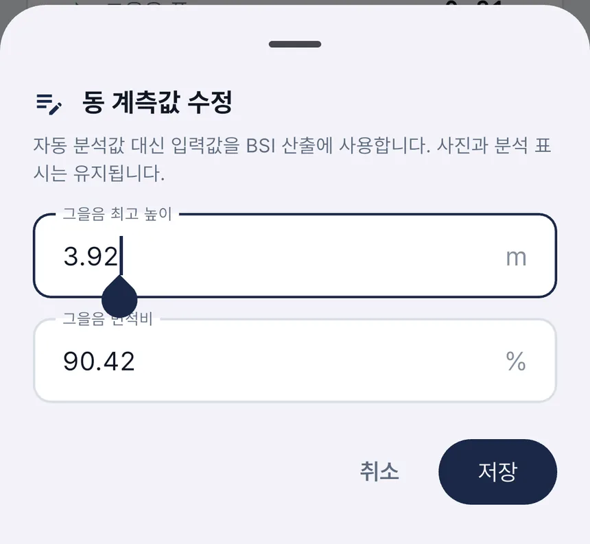
방위 수정의 계측값 직접 입력을 누르면 입력 창이 열립니다. 그을음 최고 높이(m)와 그을음 면적비(%)를 입력하면 자동 분석값 대신 BSI 산출에 사용됩니다. 사진과 분석 표시는 유지됩니다.
사진이 없는 방위가 있으면 결과 화면의 분석 사진 아래에 미촬영 방위 입력이 표시됩니다. 해당 방위를 누르고 야장의 그을음 최고 높이와 그을음 면적비를 입력하면 BSI 산출에 포함됩니다.
수고봉이 검출되지 않은 방위가 있으면 결과 화면의 방위 수정 아래에 흉고직경으로 높이 추정이 표시됩니다. 화면 위쪽 흉고직경 칸에 실측값을 입력한 뒤 이 버튼을 누르면 수간 폭으로 높이를 환산합니다. 수고봉 기준보다 정밀도가 낮으므로 가능하면 재촬영합니다.
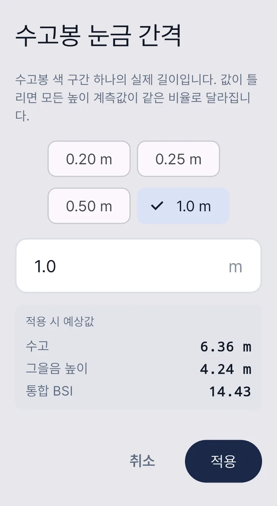
결과 화면과 조사목 상세 화면 아래쪽의 수고봉 눈금 간격을 누르면 변경할 수 있습니다. 값을 선택하면 수고, 그을음 높이, 통합 BSI의 변경 예상값을 먼저 표시합니다.
적백 폴로 계측한 방위는 0.2 m가 자동 적용되어 이 값의 영향을 받지 않습니다.
간격이 실제와 다르면 모든 높이 계측값이 같은 비율로 달라집니다. 계측값이 비정상적이라는 안내가 표시되면 먼저 이 값을 확인합니다.
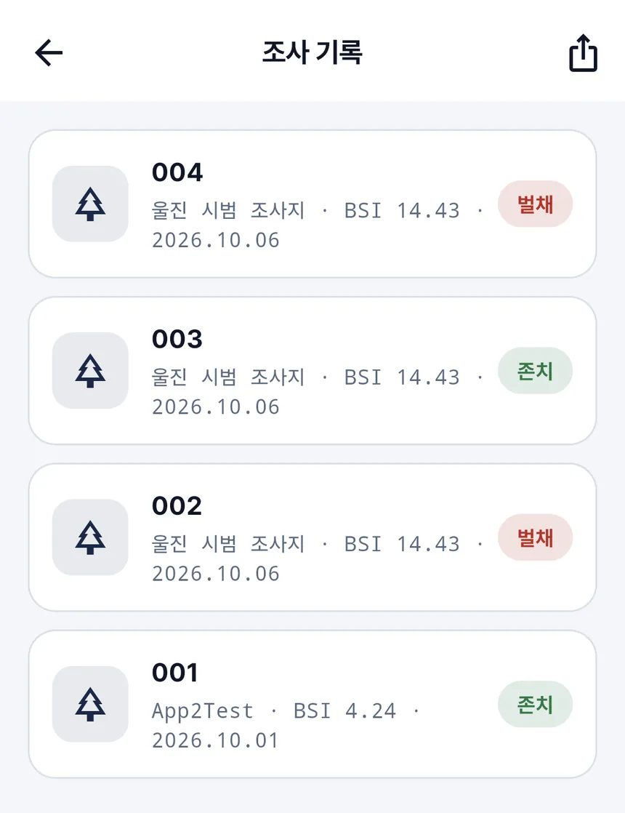
지도 화면 오른쪽 위의 조사 기록(시계 모양 버튼)을 누르면 저장한 조사목이 최신순으로 표시됩니다. 항목을 누르면 상세 화면이 열립니다.
오른쪽 위 공유 버튼을 누르면 모든 기록을 CSV 파일로 내보냅니다. 공유 창에서 메일, 메신저, 클라우드 저장소 등을 선택합니다.
목록에서 항목을 왼쪽으로 밀면 확인 절차 없이 즉시 삭제됩니다. 삭제한 기록은 복구할 수 없습니다.
조사 기록 목록에서 항목을 누르거나, 지도에서 조사목 위치를 누른 뒤 상세 보기를 누르면 열립니다.
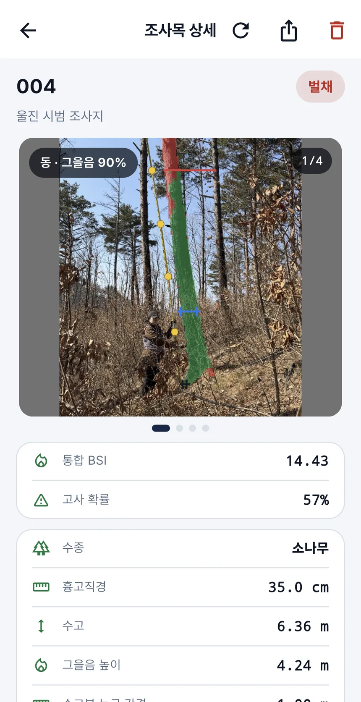
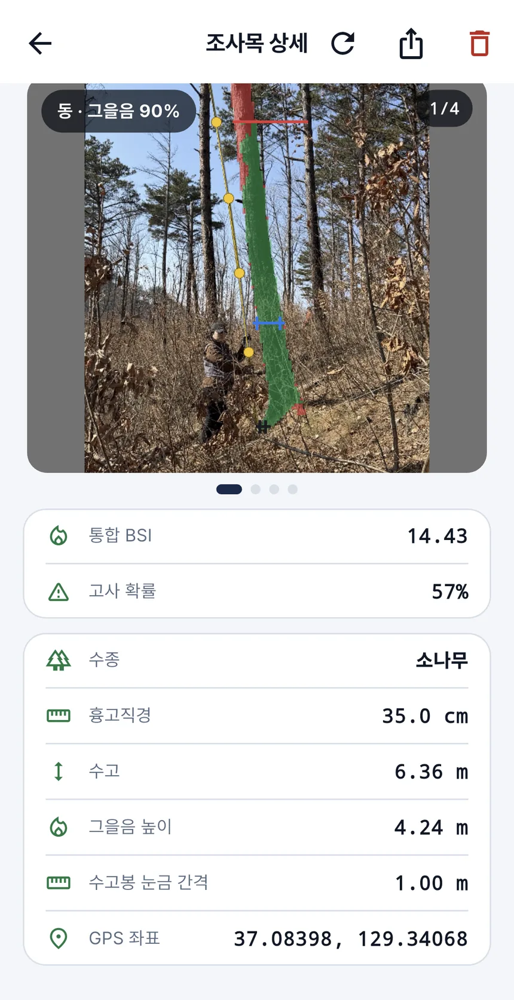
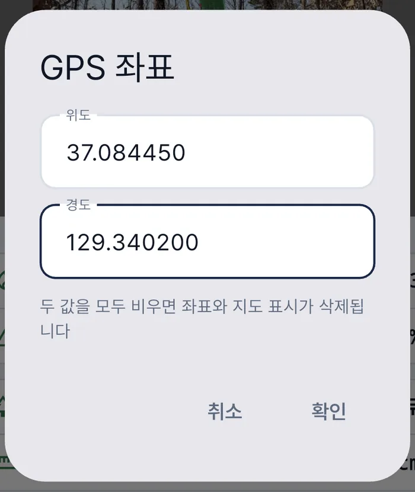
| 항목 | 기능 |
|---|---|
| 새로고침(오른쪽 위) | 이미지 재분석. 저장된 사진을 다시 분석해 BSI를 새로 산출합니다. 직접 입력한 방위와 흉고직경은 유지됩니다. |
| 공유(오른쪽 위) | 이 조사목만 CSV 파일로 내보냅니다. |
| 휴지통(오른쪽 위) | 확인 후 조사목을 삭제합니다. |
| 흉고직경 | 수정하면 고사 확률과 판정이 다시 계산됩니다. |
| 수고, 그을음 높이 | 기록과 CSV에만 쓰이는 값입니다. 통합 BSI는 바뀌지 않습니다. |
| GPS 좌표 | 위도와 경도를 수정합니다. 두 칸을 비우면 좌표와 지도 표시가 삭제됩니다. |
지도 화면 오른쪽 아래의 지도 레이어 버튼(2장 지도 화면의 6번)을 누르면 지도 레이어 창이 열립니다. 지도에서 조사목 위치를 누르면 요약이 열리며, 상세 보기를 누르면 조사목 상세 화면으로 이동합니다.
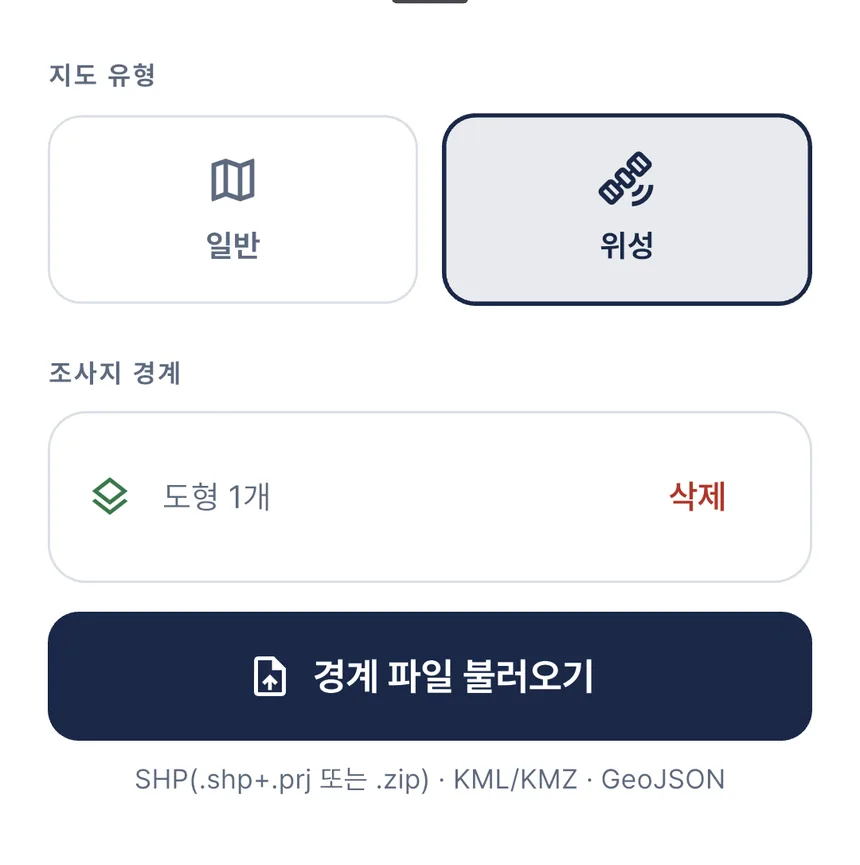
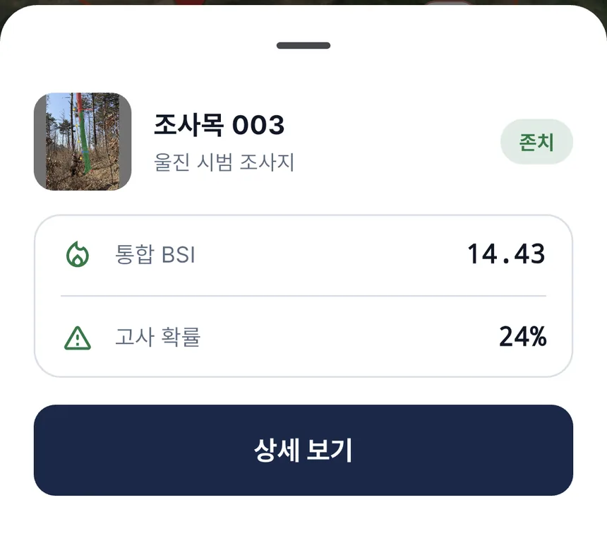
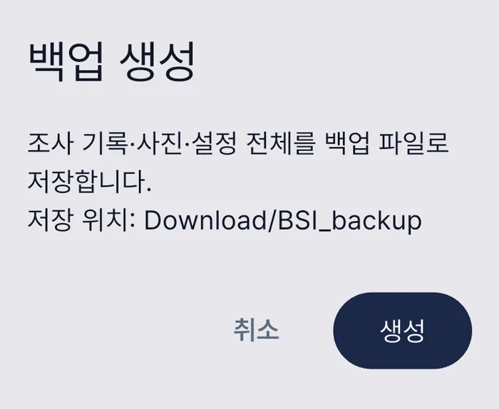
백업이 3.5 GB를 넘으면 여러 파일로 분할됩니다.
현장 조사를 마친 날마다 백업하고, 백업 파일을 PC나 클라우드 저장소에도 복사해 둡니다.
Android 파일 선택 창에 백업이 표시되지 않으면 왼쪽 위 메뉴에서 내장 저장공간 › Download › BSI_backup으로 직접 이동합니다.
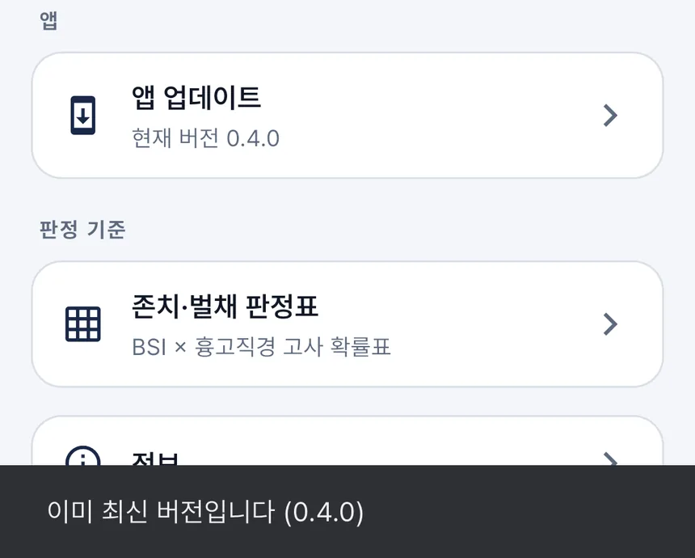
Android
iPhone
App Store에서 업데이트합니다.
업데이트해도 조사 기록은 유지됩니다.
| 안내 또는 증상 | 조치 |
|---|---|
| GPS 신호 없음, GPS 정확도 낮음 | 하늘이 트인 곳에서 GPS 표시가 초록이 될 때까지 기다립니다. 휴대폰의 위치 서비스와 앱의 위치 권한을 확인합니다. |
| 카메라 권한이 필요합니다 | Android는 설정 › 애플리케이션 › BSI 현장조사 앱 › 권한, iPhone은 설정 › BSI 현장조사 앱에서 카메라를 허용합니다. |
| 역광으로 수간이 검게 촬영되었습니다 | 태양을 등지는 위치로 옮겨 재촬영합니다. 재촬영이 어려우면 계측값을 직접 입력합니다. |
| 이 방위에서 수간을 검출하지 못했습니다 | 대상목을 화면 가운데에 두고 수간 전체가 들어오도록 재촬영합니다. 인접목이 검출되었다면 지표면·대상목 지정을 사용합니다. |
| 수고봉 눈금을 검출하지 못해 높이를 계측할 수 없습니다 | 눈금 경계가 2개 이상 보이도록 재촬영합니다. 재촬영이 어려우면 흉고직경을 입력한 뒤 흉고직경으로 높이를 추정합니다. |
| 계측값이 비정상적입니다 | 수고봉 눈금 간격이 실제 수고봉과 같은지 확인합니다. |
| 흉고직경 입력 후 판정됩니다 | 결과 화면 위쪽에 흉고직경을 입력합니다. |
| 판정표 범위를 벗어났습니다 | BSI 1~25, 흉고직경 20~58 cm 범위 밖이라 고사 확률을 산출할 수 없습니다. 입력한 흉고직경을 확인합니다. |
| 촬영 중 앱이 종료되었습니다 | 앱을 다시 실행하고 지도 위쪽 작성 중인 조사에서 계속을 누릅니다. |
| 업데이트가 설치되지 않습니다(Android) | 이 출처 허용을 켠 후 다시 시도합니다. 저장공간이 부족하지 않은지 확인합니다. |